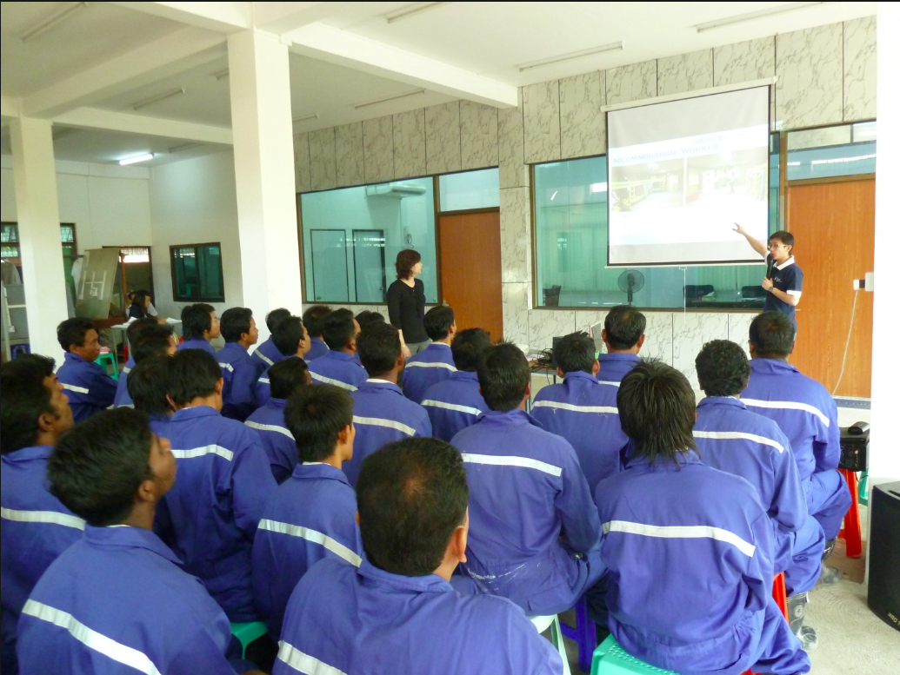
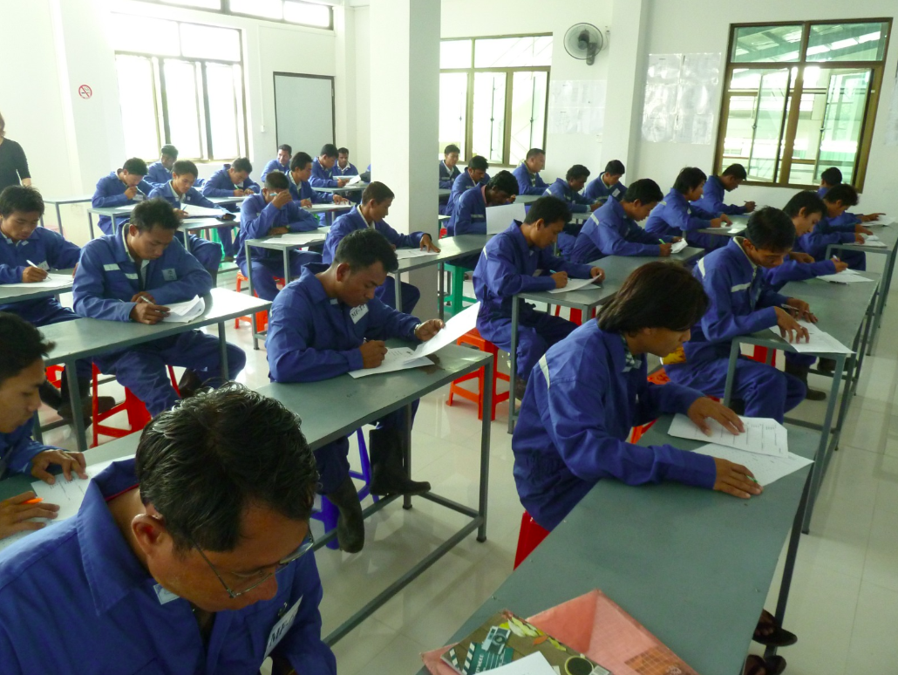
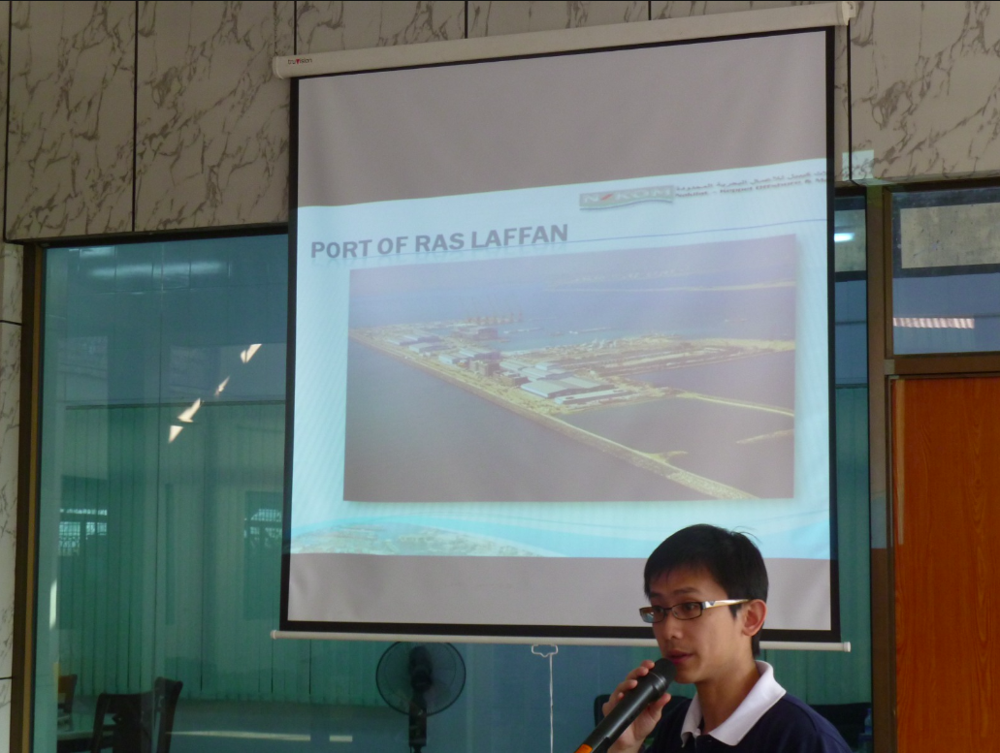

Global HR runs structured pre-departure briefings for Keppel Nakilat candidates — covering interview expectations, documentation, safety, and workplace culture before mobilisation. Sessions combine classroom instruction with practical Q&A so candidates arrive prepared and confident.